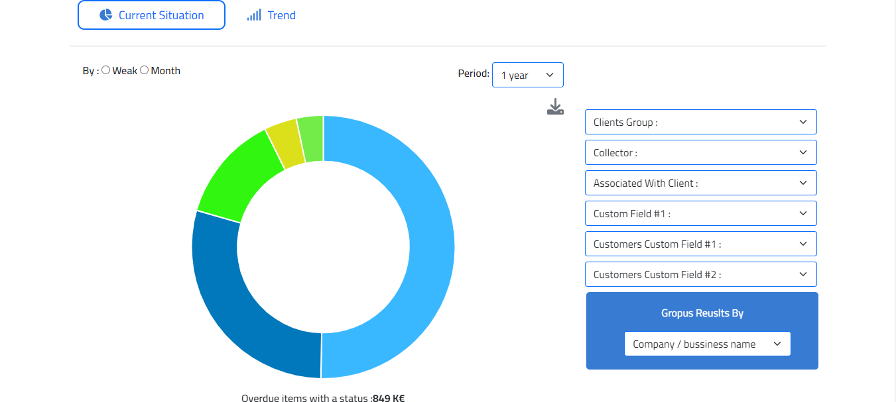
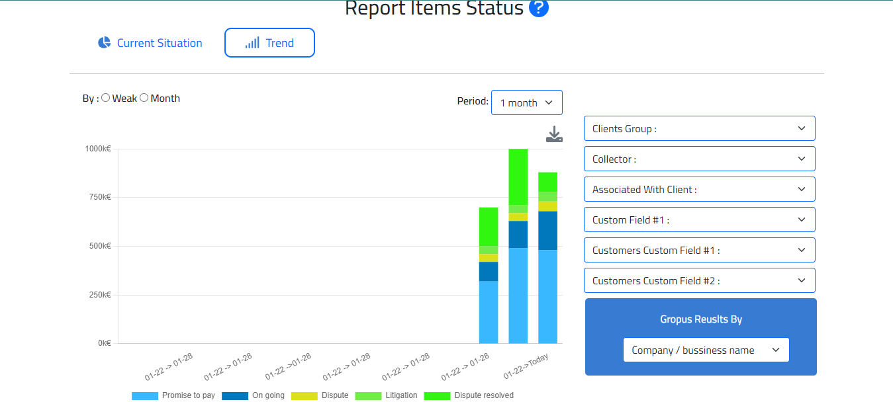
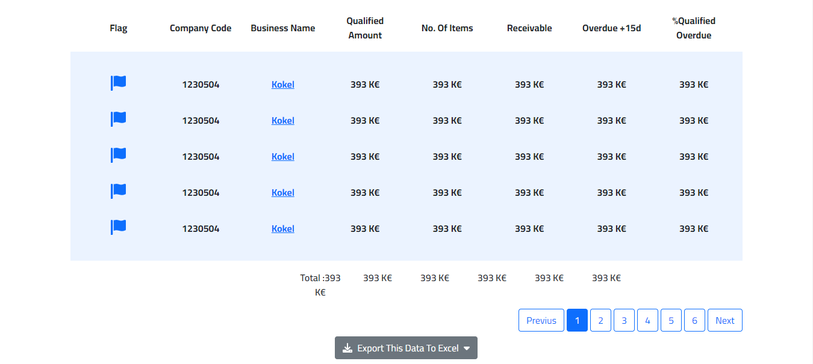

What is the items status report?
The report Items status reflects graphically and in value the statuses applied to invoices and other items types.
The report also shows the qualification rate and amount of overdue items, which are keys indicators in determining whether the monitoring of overdue receivables is optimal.
Like other reports, you can define a date to display the status at an earlier date.
The graph
It displays by default the breakdown of overdue receivable by type of status: litigation, ongoing, promise to pay, dispute, dispute resolved:
And details of the statuses when a status type is selected:
It's also possible to visualize the statuses trend.
This approch is particularly relevent to see improvements or deterioration of performance on multiple axes and to highlight the root causes of late payments and their trend :
The table
By default this list highlights the qualified amount and number of items per customer. It can be sorted and filtered in many ways to target clients on which you want to act.
It is possible to « Group results » by collector and by any customer analytical field:

It is possible to « Group results » by collector and by any customer analytical field: